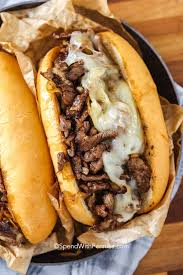

Philly Cheesesteak Recipe
Ingredients:

- 1 pound (450g) thinly sliced ribeye steak
- 4 hoagie rolls or sandwich rolls
- 1 large onion, thinly sliced
- 1 large green bell pepper, thinly sliced
- 8 slices provolone cheese
- 2 tablespoons vegetable oil or canola oil
- Salt and pepper to taste
Instructions
- Heat a large skillet or griddle over medium-high heat. Add 1 tablespoon of oil to the skillet.
- Once the skillet is hot, add the thinly sliced ribeye steak to the skillet in an even layer. Season the steak with salt and pepper to taste. Cook the steak, stirring occasionally, until it is browned and cooked through, about 3-5 minutes. Remove the steak from the skillet and set it aside.
- In the same skillet, add another tablespoon of oil if needed. Add the sliced onions and green bell peppers to the skillet. Cook, stirring occasionally, until the onions are soft and translucent and the peppers are tender, about 5-7 minutes.
- Return the cooked steak to the skillet with the onions and peppers. Stir to combine and heat through for another 1-2 minutes.
- Slice the hoagie rolls or sandwich rolls in half lengthwise, leaving one side hinged. If desired, lightly toast the rolls in the skillet or under a broiler.
- Divide the steak, onions, and peppers evenly among the hoagie rolls. Top each sandwich with two slices of provolone cheese.
- If using optional toppings like mushrooms or banana peppers, add them on top of the cheese.
- Place the assembled sandwiches under the broiler for 1-2 minutes, or until the cheese is melted and bubbly.
- Remove the sandwiches from the oven and carefully close the hoagie rolls. Serve hot and enjoy your delicious Philly cheesesteak sandwiches!